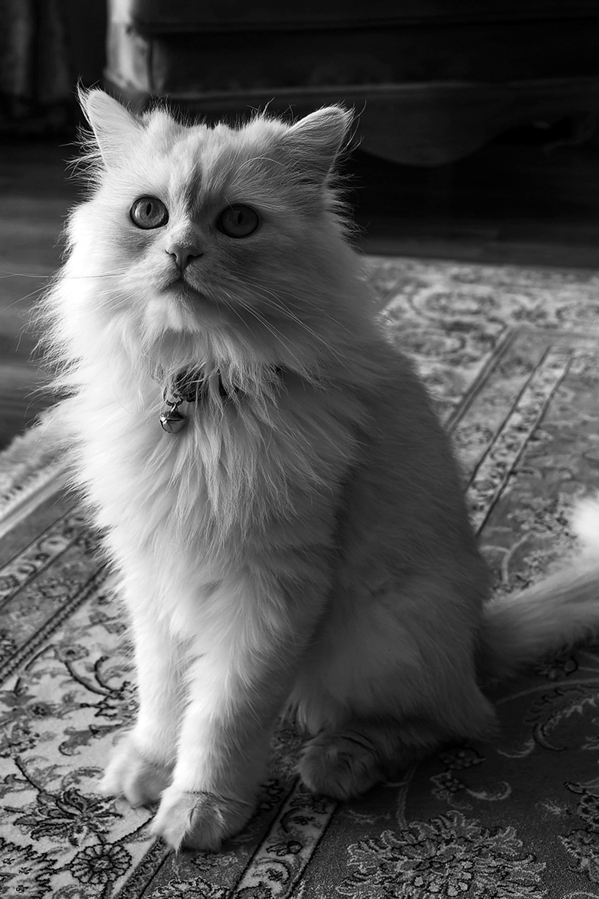

Como cuidar y alimentar a un gato persa
Las mascotas forman una parte importante en nuestras vidas y nos acompañan en nuestros momentos mas entrañables en los que podemos guardar bonitos recuerdos.Conoce como puedes cuidar de un gatito persa,que tipo de alimentacion debe recibir,cuanto debe comer y a que horas.Asi como cada cuanto se debe bañar y llevar al veterinario para prevenir enfermedades graves.Si te interesa has clic en el boton de abajo.
Leer mas